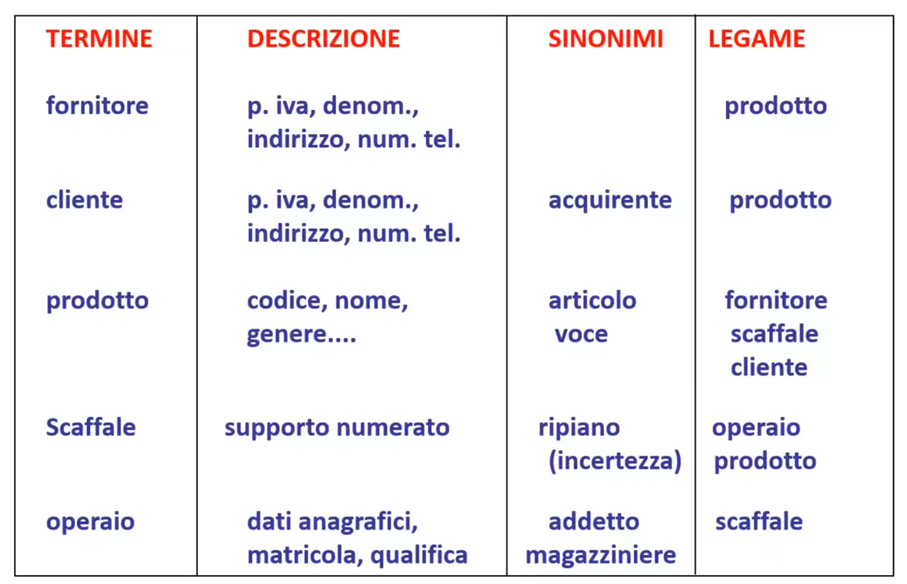

La costruzione di una base di dati viene effettuata seguendo i relativi step:
Nella fase di progettazione distinguiamo:
Tradurre la descrizione informale del cliente in uno schema formale che dovrà essere usato dal database.
Durante questa fase lo schema formale sarà qualcosa di generico e adattabile ad ogni tipo di base di dati, per cui non è utile alla tecnologia (DBMS) con il quale andiamo ad implementare la base di dati ma piuttosto di trovare una descrizione appunto formale dei requisiti comunicataci.
Il modello che utilizzero per la descrizione formare sarà il modello entità-relazione.
Durante la fase di progettazione logica, viene invece preso lo schema formale scritto seguendo il modello entità-relazione e tradotto in uno schema logico che sarà più vicino al DBMS che si intende usare.
Sulla base delle operazioni che il cliente necessita e sullo schema logico, durante questa fase viene fatta anche un' analisi delle performance e quindi una relativa ottimizzazione (es. normalizzazione).
Si produce un modello fisico dipendente molto dal DBMS scelto.
Durante questa fase avremmo come risultato il dabase completo.
Durante la progettazione concettuale si inizia la vera e propria analisi dei requisiti.
L'analisi dei requisiti deve:
Durante questa fase si produce un glossario dei termini, cioè per ognuno dei termini specifici all'interno dei requisiti vado a creare una tabella con la descrizione, elenco dei sinonimi e elenco dei termini collegati. Si verifica la completezza e la consistenza dei termini. La prima controllando che tutti gli aspetti importanti sono stati considerati, la seconda che tutti i termini sono stati definiti in maniera corretta, tutti appaiono in almeno un'operazione e che tutte le operazioni facciano riferimento a termini ben definiti.
Es. Da una prima analisi dei requisiti, intervistando il cliente proprietario di un magazzino, otteniamo:
Da questi requisiti produciamo un glossario dei termini:
Se prendiamo come esempio la prima riga, fornitore è legato al prodotto, infatti avevamo detto "I fornitori forniscono prodotti".
Durante tutta la fase andiamo a seguire il modello entità-relazione.
Sulla base di questo modello abbiamo: